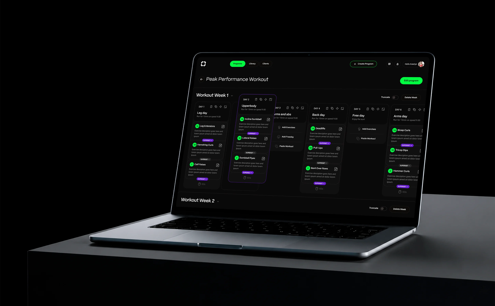
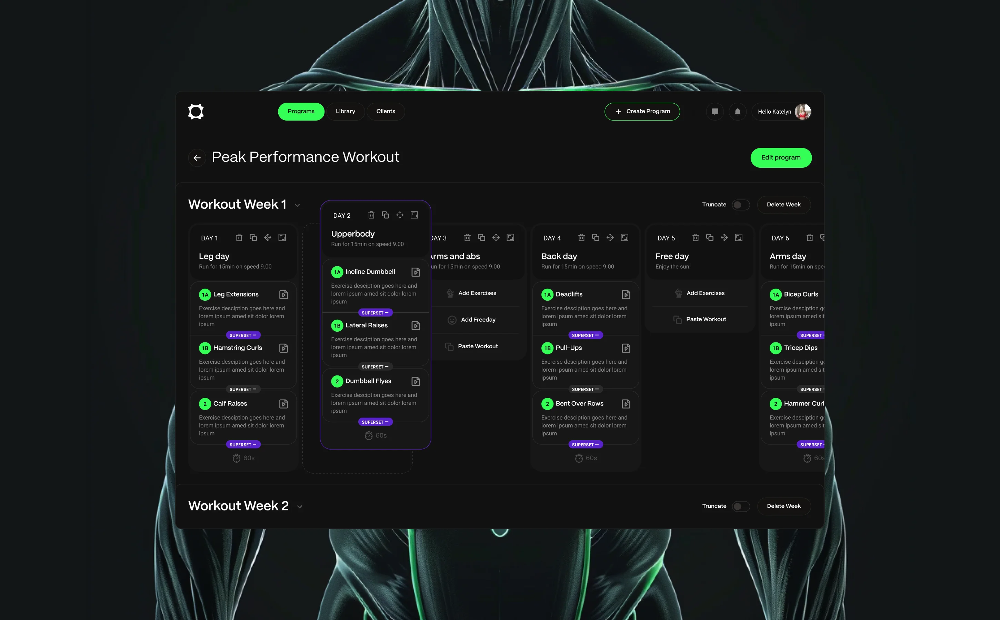
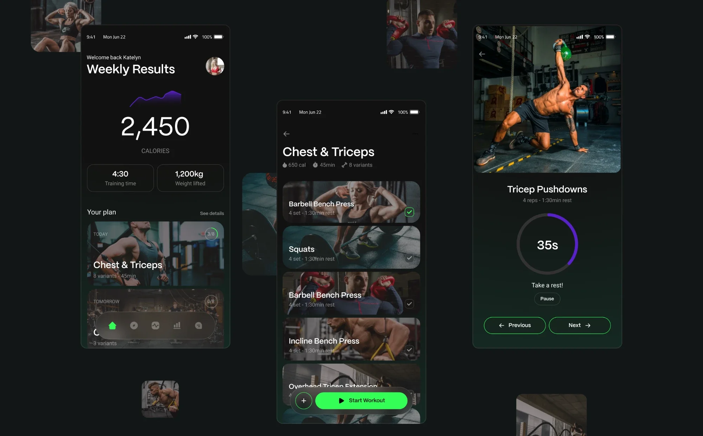
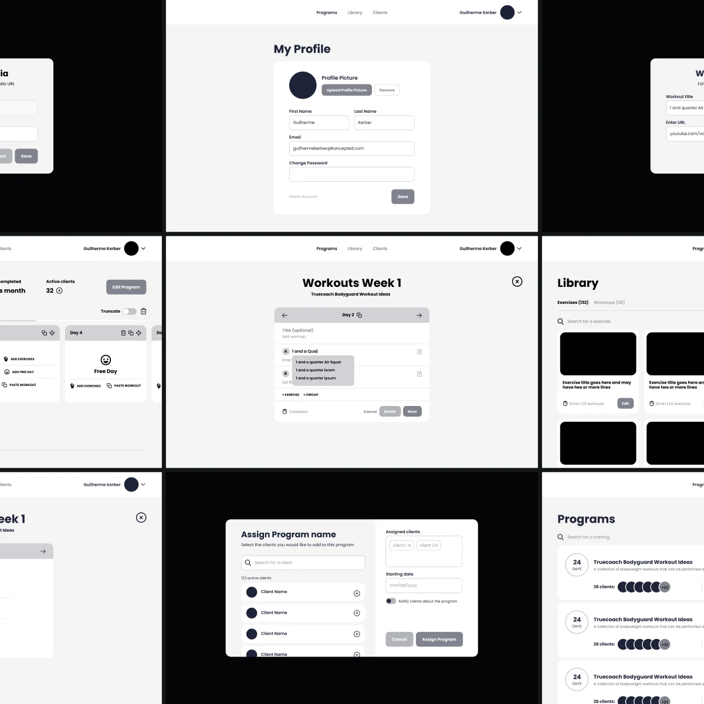
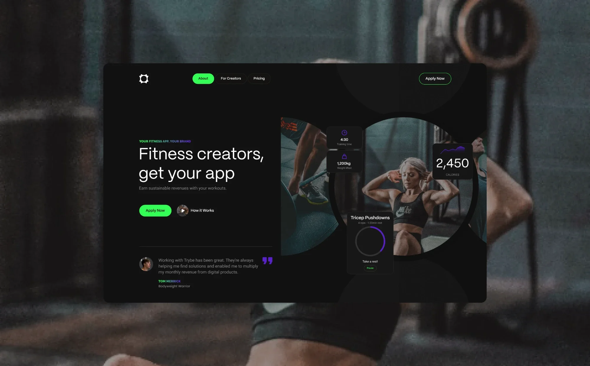
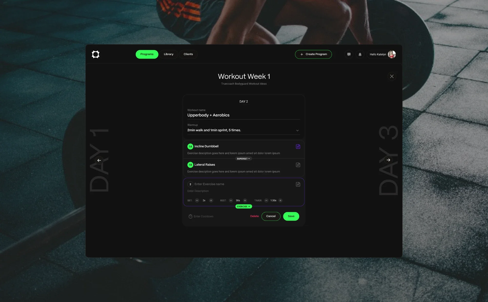
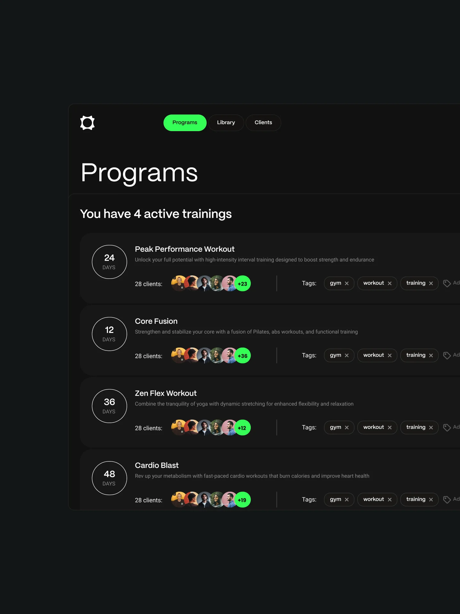
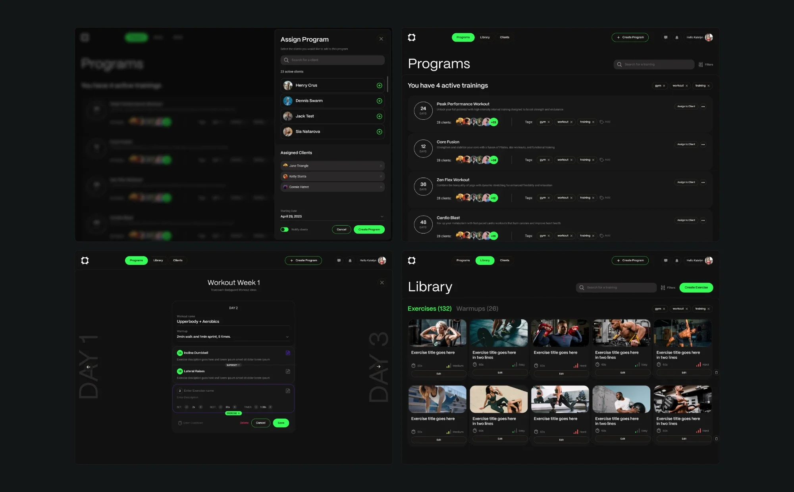
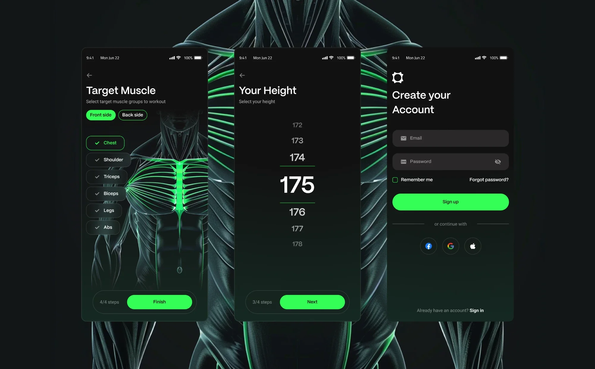

Case study · Trybe · 2020–2021
Cross-Platform Coaching Experience
The visual and interaction design behind two apps: a program builder for personal trainers and a workout app for their students.
- Role
- UI/UX design, product design, branding
- Team
- Me, 1 stakeholder, 1 PM
- Duration
- 3 months

Intro · Context
Gyms closed overnight
During COVID, personal trainers lost in-person coaching, and with it students, income and continuity. The platform managed workouts, but it wasn’t a remote coaching experience.
- 01Trainers had to migrate fastGet existing students onto a first remote workout without rebuilding every session.
- 02Students were often beginnersFrom invite to first completed workout with as little friction as possible.
- 03Simplicity was the edgeTrainerize, TrueCoach, My PT Hub and FitSW were built around in-person training.
Intro · Two contexts
One product, two very different moments
Trainers plan at a desk, with time and a big screen. Students glance at a phone between sets, out of breath. Every UI decision started from which of the two moments it served.


Foundations · Wireframes
Structure first, in grayscale
Both sides were wireframed in parallel and tested as clickable prototypes with a small group of trainers and students, before any color.
- Turning an in-person session into a train-at-home programTrainer
- The day-by-day program builderTrainer
- Invite, account, where you train, first workoutStudent

Foundations · Visual language
A dark gym, one bright signal
- 01Green means goOne saturated green marks what moves you forward or what’s active: Start workout, Save, Next, the current tab, the exercise order.
- 02Purple means structureA second accent marks how a workout is built: superset links, the rest timer’s progress, the card you’re editing or dragging.

Trainer app · Decision 1
A week of day columns
Programs are built week by week, one column per day, instead of full monthly cycles. Each day carries its own actions: delete, duplicate, move and expand. Dragging a day lifts the card and leaves a dashed slot where it will land.
Trade-offFocus over long-range visibility. A full month of periodization isn’t visible at a glance, and could come later as another view.
Trainer app · Decision 2
Building a day, with as little typing as possible
- 01Supersets read as pairsLinked exercises share a number, 1A and 1B, joined by a Superset chip, so the pairing reads before the details.
- 02Steppers for numbersSets, rest and timer change with minus and plus, in sensible steps, so a value is one tap away.
- 03Insert where you areThe Exercise + chip sits on the edge of the card being edited, so the next exercise is added right below it.

Trainer app · Programs
Every program, scannable in one line
Each row answers what a trainer checks first: how long it runs, who is on it and how it’s labeled.
- Length in days, inside a ringHow long
- A stack of client photos, then +NWho
- Tags you can remove in placeWhat

Trainer app · Decision 3
Migration over rework
Trainers could add a Train at home variant to the exercises they already had, turning existing sessions into remote ones instead of starting over.
Trade-offSpeed over quality. Migrated sessions still needed tuning to work well at home.

Student app · Decision 4
Designed for between sets
- Photo cards show the movement before the nameRecognize
- A check on each card, so progress shows in the listTrack
- A large rest ring, with Pause, Previous and Next as wide targetsAct
Student app · Decision 5
Onboarding you can touch
- 01Pick muscles on the bodyChoosing a group lights it up on the anatomy illustration, front or back. The illustration becomes the input.
- 02A wheel for numbersHeight scrolls on a picker, with the chosen value large and centered. No keyboard, no units to type.
- 03Progress inside the button barThe step count sits next to the main action, so beginners always know how much is left.
Trade-offAsking where students train made plans feel personal, but added setup work on the trainer side.

Outcome · Impact
Trainers kept their students, now remotely
- Invite-to-active-student conversion
- 40%
- Out of every 100 students invited, 40 sign up and complete at least one workout.
- Adoption among existing students
- 61%
- More than half of a trainer’s existing clients started training remotely.